TCPK Desktop GUI
15 tabs -- screenshots and usage guide
The desktop GUI is a native WinForms application that runs directly on Windows -- no browser required. It provides the same discovery scan, plus exploit PoC generation, credential extraction, traffic interception, live runtime inspection, and binary analysis tools.
Import-Module .\TCPK\TCPK.psd1
Start-TCPKGuiCommon controls (top bar)
Every tab shares the same top bar:
- Target -- paste or browse to an MSIX file, install folder, EXE, or DLL.
- Browse / Auto-Detect -- file picker and automatic framework/runtime identification.
- Profile -- Full (all checks), Standard, or Quick.
- PackageName / ProcessName -- optional filters for MSIX package or running process name.
- Online CVE -- query OSV and NVD for live CVE data during the scan.
- AI-verify findings -- enable AI agent verification (configure provider/model/API key on the same row).
- Font / Size / Theme -- adjust the GUI appearance.
- Run Audit / Pause -- start or pause the discovery scan.
The bottom bar shows report links (HTML, Excel, Markdown) and the authorization disclaimer.
Dashboard
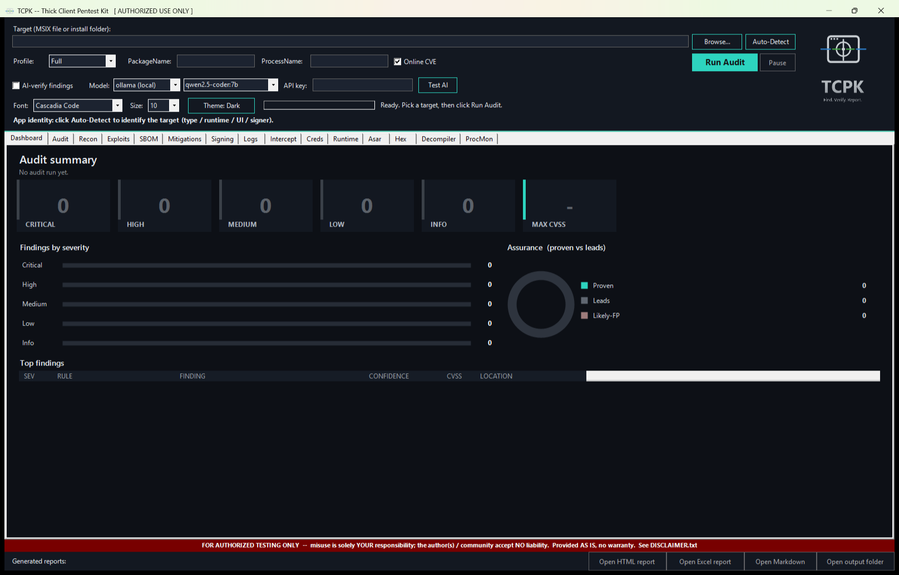
The landing page. After an audit completes, the dashboard populates with:
- Severity KPI cards -- counts of Critical, High, Medium, Low, Info findings plus the maximum CVSS v4.0 score.
- Findings by severity -- horizontal bar chart showing the distribution of findings.
- Assurance donut -- shows the ratio of Proven (Confirmed IL / dynamic) vs Leads (Inferred, need triage) vs Likely-FP (IL-demoted).
- Top findings table -- the most important findings sorted by severity and confidence, with columns: SEV, RULE, FINDING, CONFIDENCE, CVSS, LOCATION.
Audit
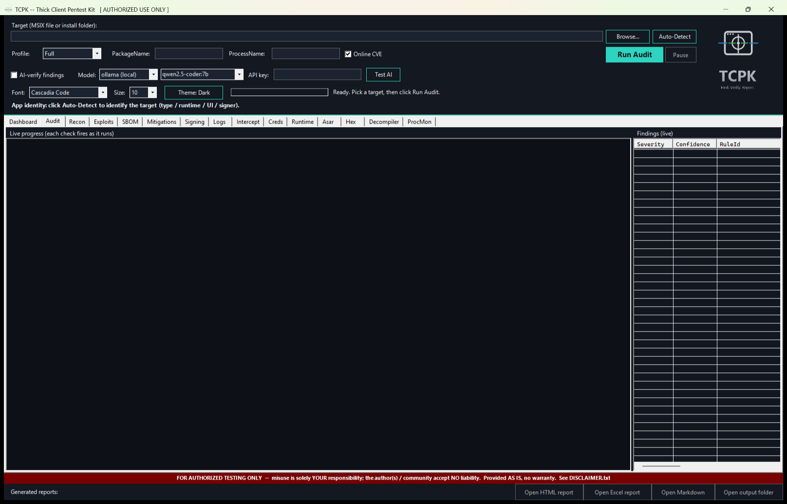
The main scan tab. Findings stream in live as each check runs.
- Left panel -- live audit log showing each check as it executes, with timing information and severity-coloured output.
- Right panel -- findings list with sortable columns.
- Splitter -- drag to resize the log vs findings panels.
Recon
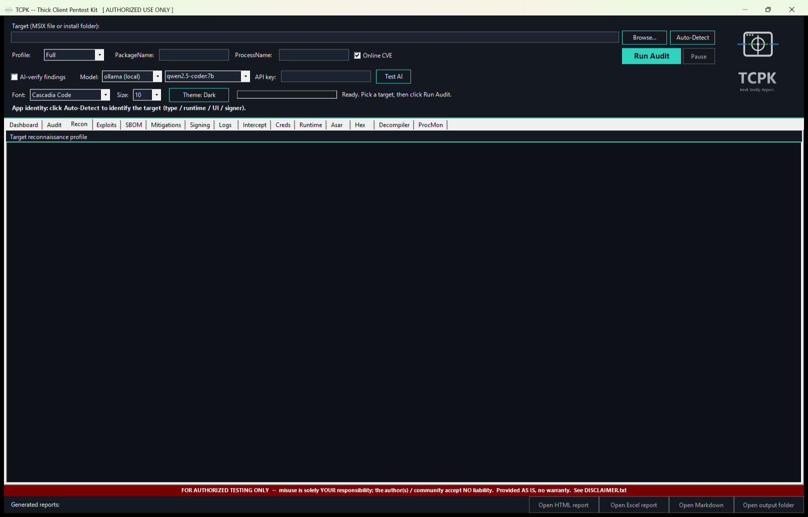
Target reconnaissance profile -- a comprehensive summary of the application's identity and attack surface.
- Profile output -- read-only console showing the full recon report: app framework, runtime version, signer, architecture, file counts, network endpoints, registry footprint, and more.
Exploits
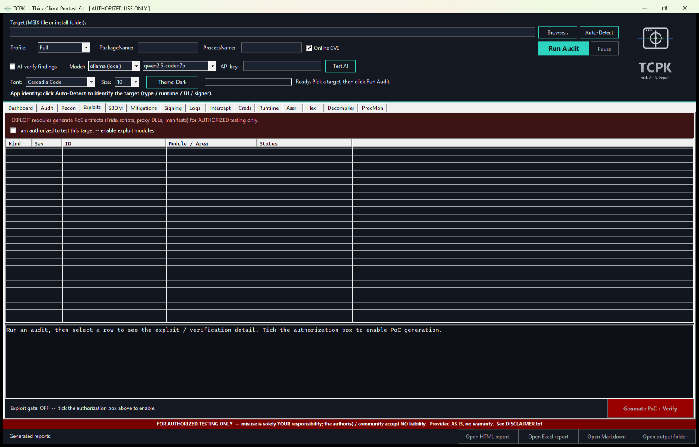
Exploit plan and PoC generation. Every exploit module is gated behind an authorization checkbox.
- Authorization banner -- "EXPLOIT modules generate PoC artifacts (Frida scripts, proxy DLLs, manifests) for AUTHORIZED testing only."
- Authorization checkbox -- tick "I am authorized to test this target" to enable the exploit modules.
- Exploit list -- ListView with columns: Kind, Sev, ID, Module/Area, Status. Populated after an audit discovers exploitable findings.
- Detail panel -- select a row to see the exploit/verification detail and the generated PoC code.
- Generate PoC + Verify -- button (bottom-right) to generate the PoC artifact and run verification. Disabled until the authorization checkbox is ticked.
SBOM
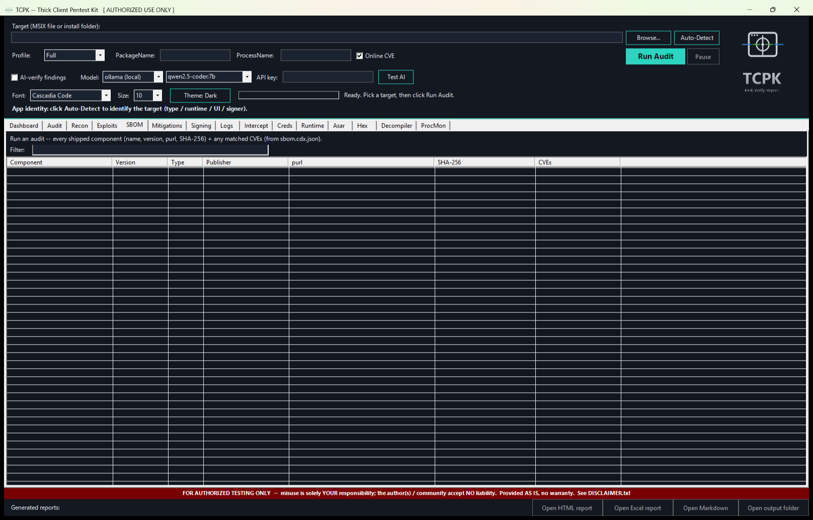
Software Bill of Materials -- every component bundled with the target application.
- Filter -- type to narrow the component list by name, version, or type.
- Component table -- ListView with columns: Component, Version, Type, Publisher, purl, SHA-256, CVEs.
Mitigations
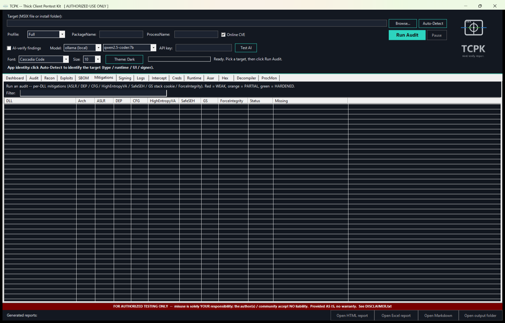
Binary hardening status for every DLL and EXE in the target.
- Colour key -- Red = WEAK (missing critical mitigations), Orange = PARTIAL, Green = HARDENED.
- Filter -- narrow by DLL name or status.
- Mitigations table -- ListView with columns: DLL, Arch, ASLR, DEP, CFG, HighEntropyVA, SafeSEH, GS (stack cookies), ForceIntegrity, Status, Missing.
Signing
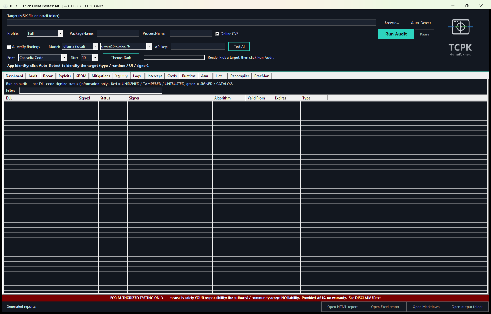
Code signing verification for every binary in the target.
- Colour key -- Red = UNSIGNED / TAMPERED / UNTRUSTED, Green = SIGNED / CATALOG.
- Filter -- narrow by DLL name or signing status.
- Signing table -- ListView with columns: DLL, Signed, Status, Signer, Algorithm, Valid From, Expires, Type.
Logs
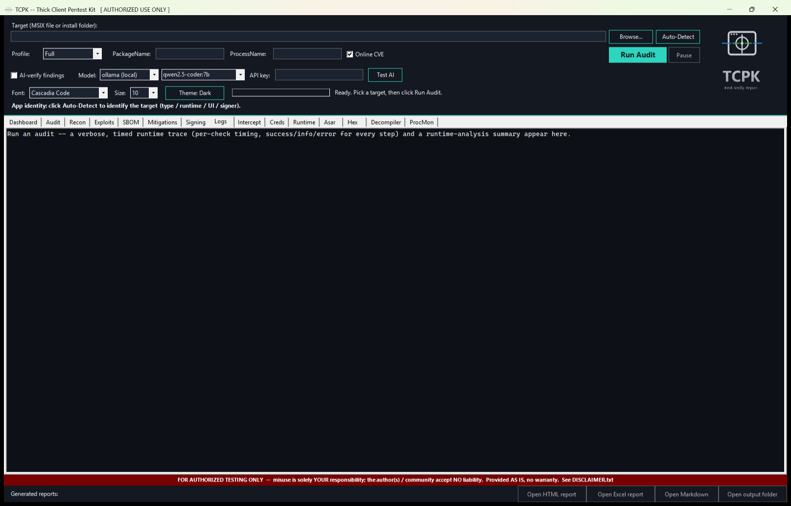
Verbose runtime trace and timing log.
- Log console -- read-only Consolas text showing every check that ran, how long it took, and any warnings or errors. Severity-coloured output.
Intercept
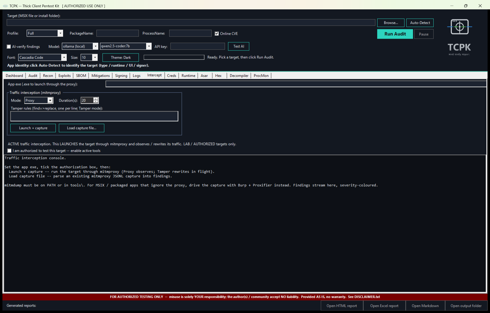
Traffic interception and analysis using mitmproxy (proxy mode) or Frida (hook mode). Gated behind an authorization checkbox.
- Authorization banner -- warns that this performs active traffic interception.
- Authorization checkbox -- tick to enable interception controls.
- App exe path -- path to the application executable to intercept.
- Traffic interception (mitmproxy) group:
- Mode -- Proxy (passive capture) or Tamper (modify in-flight).
- Duration (s) -- how long to capture traffic.
- Tamper rules -- multiline text for tamper-mode response modification rules.
- Launch + capture -- starts mitmproxy, launches the app through the proxy, and captures traffic.
- Load capture file -- load a previously saved capture file for analysis.
- Output console -- findings from the captured traffic (credentials, tokens, cleartext, endpoints).
Creds
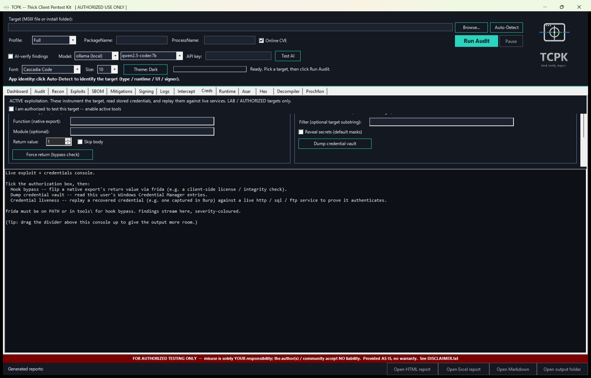
Active credential extraction and replay. Every tool on this tab is gated behind an authorization checkbox.
- Native hook bypass (Frida) -- hook a native export and force a return value (e.g. bypass a license check).
- Windows stored credentials (Credential Manager) -- dump all entries, optionally unmasking passwords.
- Credential liveness -- replay a recovered credential against a live http/sql/ftp service to prove it works.
- Output console -- results from all credential operations.
Runtime
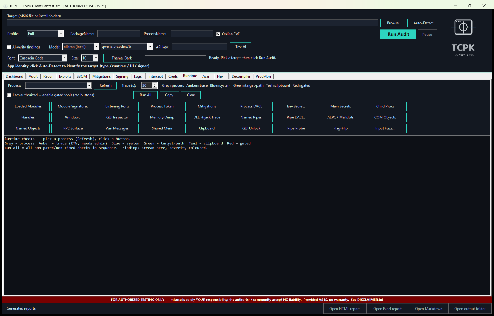
Read-only live checks on a running process. 27 tool buttons organised by colour-coded category.
- Process selector -- pick a running process from the dropdown or type a name.
- Trace (s) -- duration for timed trace tools (default 30).
- Colour legend -- Grey = process, Amber = trace (ETW, needs admin), Blue = system, Green = target-path, Teal = clipboard, Red = gated.
- Tool buttons (27 total):
- Process (grey): Loaded Modules, Module Signatures, Listening Ports, Process Token, Mitigations, Process DACL, Env Secrets, Mem Secrets, Child Procs, Handles, Windows, GUI Inspector, Memory Dump.
- Trace (amber): DLL Hijack Trace.
- System (blue): Named Pipes, Pipe DACLs, ALPC / Mailslots.
- Target-path (green): COM Objects, Named Objects, RPC Surface.
- Clipboard (teal): Clipboard.
- Gated (red): GUI Unlock, Pipe Probe, Flag-Flip, Input Fuzz.
notepad), click "Refresh", then click any tool button. Results stream into the output console. Click "Run All" to run every non-gated check in sequence.ProcMon
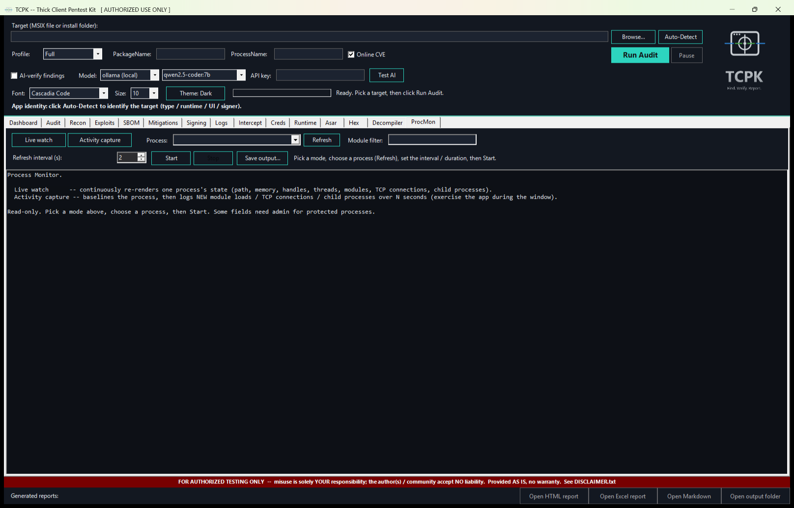
Live process monitor -- continuously observes a running process. Two modes: live watch (continuous refresh) and activity capture (baseline then detect changes).
- Mode buttons -- "Live watch" or "Activity capture".
- Process selector -- pick from running processes or type a name.
- Module filter -- filter loaded modules by substring.
- Interval / Duration -- refresh interval (live watch) or capture duration (activity capture) in seconds.
- Start / Stop -- begin or end monitoring.
- Output console -- displays process identity, memory usage, loaded modules, TCP connections, child processes.
Asar
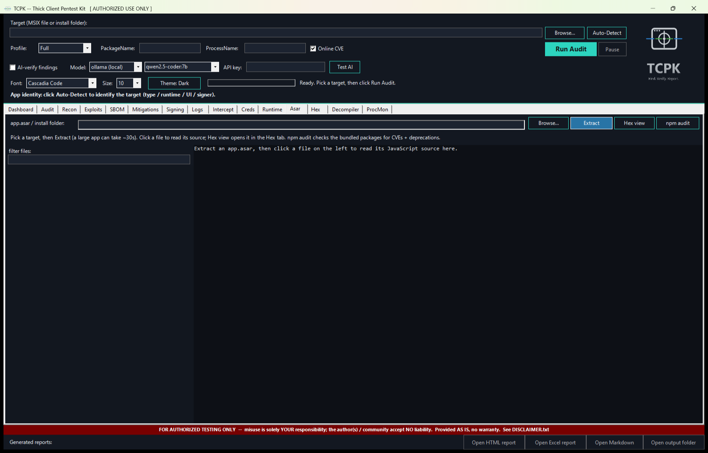
Electron asar archive extraction and source browser.
- Target path -- path to the Electron app's install folder or app.asar file.
- Browse / Extract -- file picker and extraction trigger.
- Hex view -- switch to the Hex tab for binary inspection of a selected file.
- npm audit -- run a supply-chain vulnerability scan on the bundled node_modules.
- Filter -- narrow the file list by name, extension, or keyword.
- File list (left panel) -- all extracted files from the asar archive.
- Source viewer (right panel) -- click a file to view its source code.
.js, config, token) to find interesting files. Click a file to view its source. Click "npm audit" for supply-chain checks.Hex
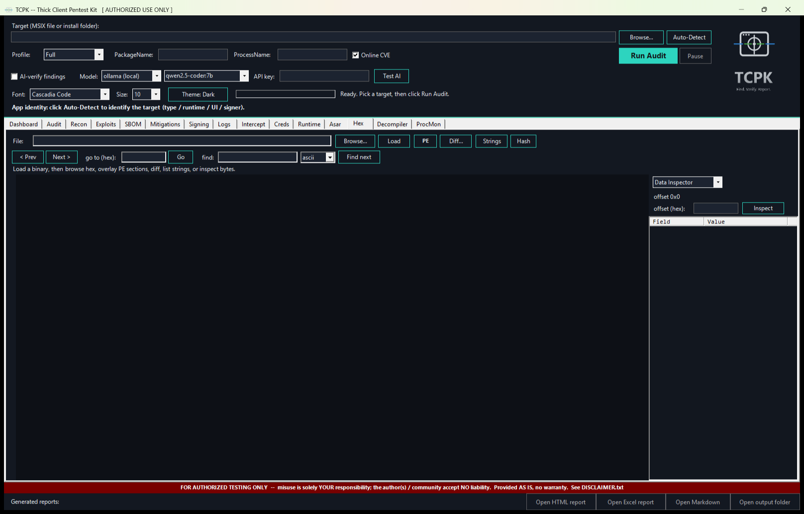
Raw hex + ASCII viewer with PE analysis, string extraction, binary diff, XOR decode, and data inspection.
- Toolbar row 1: Browse, Load, PE (PE structure overlay), Diff (binary comparison), Strings (extract readable strings), Hash (file hashes).
- Toolbar row 2: Prev/Next page navigation, "go to (hex)" offset jump, find (ASCII or hex pattern search).
- Hex view (main area) -- colour-coded hex display: Dim = null bytes, Blue = whitespace, Green = printable ASCII, Orange = control chars, Purple = high/extended bytes. Entropy heatmap strip alongside.
- Right panel -- mode-switchable: Data Inspector, PE Map, XOR Decode, Byte Freq, Bookmarks.
Decompiler
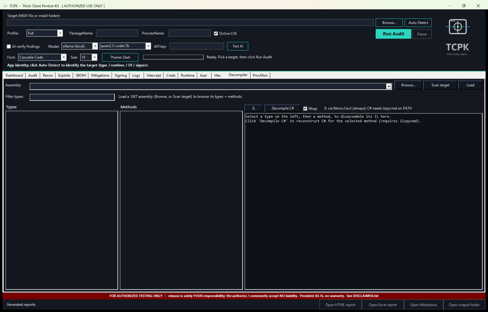
.NET assembly decompiler powered by Mono.Cecil. View IL disassembly or decompiled C# for any method in any .NET module.
- Assembly selector -- ComboBox listing DLLs from the target. Click "Scan target" to enumerate all .NET assemblies, or "Browse" for a specific DLL.
- Load -- load the selected assembly into the decompiler.
- Filter types -- narrow the type list by name.
- Types list (left column) -- all .NET types in the assembly.
- Methods list (centre column) -- methods of the selected type.
- Code viewer (right column) -- IL disassembly or decompiled C#. Sink-bearing methods are highlighted.